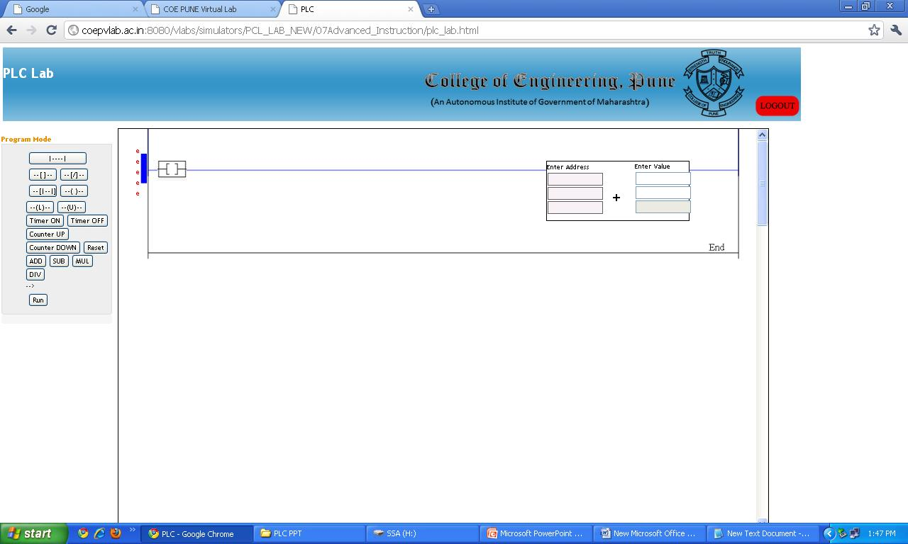
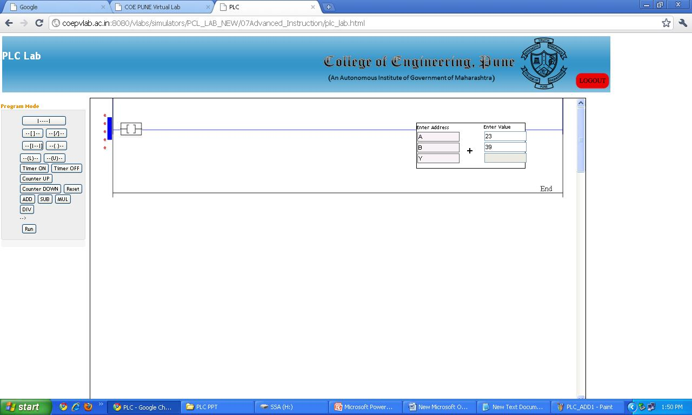
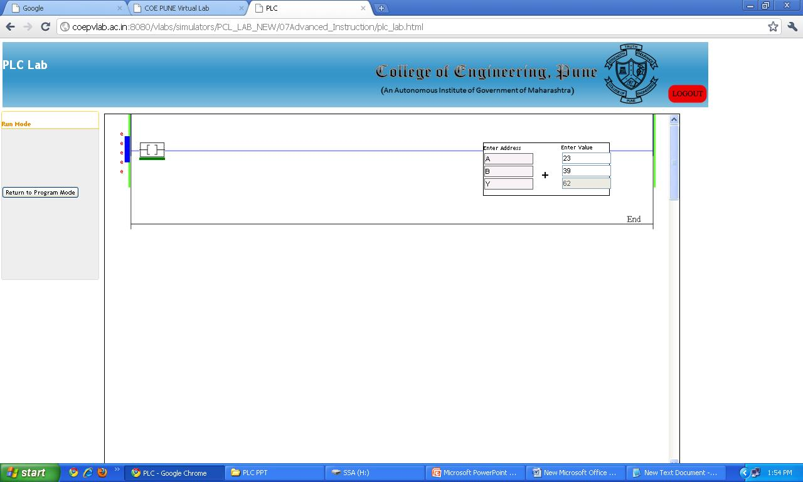

Aim
To Study computational / arithmatic instructions used in PLC ladder pogramming.
Objective:-
- 1. Study Comutational Instructions available in PLC
2. Understand the use of arithmatic instructions

Q1.
In any PLC based system, scan time of loop does not depend on
CPU speed
Memory capacity
Program length
Q2.
The standard control signal range used for PLC analog inputs is
3- 15 psi
4-20 mA
0- 20 mA
Q3.
In PLC ladder program Branch instruction is used to create
Parallel path
Series of energised contacts
series path
Q4.
In PLC 'OND' term stands for
ON Delay Timer
OFF Delay Timer
Both On or OFF Delay Timer
Q5.
In case of PLC, ___ term is used for down counter function
CTU
CTD
none of these

In case of PLC various instructions are available which can be used for computational purpose.
The compute/math instructions evaluate arithmetic operations using an expression or a specific arithmetic instruction.
Various instructions PLC can support are as follows.
| Instruction | Description |
| ADD | Add two values |
| SUB | Subtract two values |
| MUL | Multiply two values |
| DIV | Divide two values |
| MOD | Determine the remainder after one value is divided by another |
| SQR | Calculate the square root of a value |
| NEG | Take the opposite sign of a value |
| ABS | Take the abosolute value of a value |
When these operations are carried out in the PLC, the type should be the same for source and destination e.g. real, integer etc. You can use mix data types, but loss of accuracy and rounding error occurs. The instruction may take more time to execute.
A compute/math instruction executes once each time the instruction is scanned as long as the rung-condition-in is true.
Out of the above; ADD, SUB, MUL and DIV instructions are available in the PLC simulator.
The input and output parameters associated with these instructions are:
| Input Parameter | Data Type | Description |
| EnableIn | BOOL | Enable input. If cleared, the instruction does not execute and outputs are not updated |
| SUB | Subtract two values | Description |
| Source A | REAL | Value to add to Source B |
| Source B | REAL | Value to add to Source A |
| Output Parameter | Data Type | Description |
| EnableOut | BOOL | Enable output |
| Dest | REAL | Result of the math instruction |
ADD instruction:
The ADD instruction adds Source A to Source B and places the result in the Destination.
When the instruction is used in Relay Ladder the output parameter conditions are defined as mentioned below.
| Condition | Action |
| prescan | The rung-condition-out is set to false. |
| rung-condition-in is false | The rung-condition-out is set to false. |
| rung-condition-in is true | Destination = Source A + Source B The rung-condition-out is set to true |
SUB instruction:
The SUB instruction subtracts Source B from Source A and places the result in the Destination.
When the instruction is used in Relay Ladder the output parameter conditions are defined as mentioned below.
| Condition | Action |
| prescan | The rung-condition-out is set to false. |
| rung-condition-in is false | The rung-condition-out is set to false. |
| rung-condition-in is true | Destination = Source A - Source B The rung-condition-out is set to true |
MUL instruction:
The MUL instruction multiplies Source A with Source B and places the result in the Destination.
When the instruction is used in Relay Ladder the output parameter conditions are defined as mentioned below.
| Condition | Action |
| prescan | The rung-condition-out is set to false. |
| rung-condition-in is false | The rung-condition-out is set to false. |
| rung-condition-in is true | Destination = Source A * Source B The rung-condition-out is set to true |
DIV instruction:
The DIV instruction divides Source A by Source B and places the result in the Destination.
When the instruction is used in Relay Ladder the output parameter conditions are defined as mentioned below.
| Condition | Action |
| prescan | The rung-condition-out is set to false. |
| rung-condition-in is false | The rung-condition-out is set to false. |
| rung-condition-in is true | Destination = Source A / Source B The rung-condition-out is set to true |

First click on simulator tab and open the simulator by clicking on the link.
-
1. Add a new rung.
2. Insert NO contact. Also click on ADD tab provided at left side of the simulator. The screen shot will look as follows.

3. Assign tag to NO contact and enter the addresses. Enter values for source A and B. Observe following screen shot.

4. For executing the instruction switch to run mode. Toggle the input contact and see the result at output Y as shown below.

Similarly you can execute SUB, MUL and DIV instructions. After studying these instruction you can proceed to post test and review questions

Q1.
A compute/math instruction executes ...... each time the instruction is scanned as long as the rung-condition-in is true.
Once
Twice
Repeatedly
Q2.
When the arithmatic operations are carried out in the PLC, if the data type for source and destination is not similar then,
loss of accuracy and rounding error occurs
Instruction takes more time to execute.
Both 1 and 2 above
Q3.
........... parameter stores the result of the math instruction
Dest
EnableIn
EnableOut
Q4.
The data type of EnableOut is
REAL
BOOL
INT
Q5.
The instruction used for determining the remainder of division is
MOD
DIV
NEG

- 1. State different input parameters associated with “MUL” instruction.
2. For evaluating arithmetic operation which instructions are generally available in PLC?
3. What happens if arithmetic instructions are implemented using mix data types?
4. In case of “SUB” instruction which action is performed if the rung condition input is true?
5. In case of arithmetic instruction what is the status of enable out during pre-scan?

- Gary Dunning, “Introduction Programmable Logic Controllers”, CENGAGE Learning, 3rd Ed., 2006.
- John R. Hackworth, Frederick D. Hackworth Jr., “Programmable Logic Controllers ”, Pearson, 2004.
- W.Bolton, “Programmable Logic Controllers”, Elsevier, 4th Ed., 2006.
- Leach Malvino ," Digital principles and application
- http://plcbasics.net/
- http://www.plcmanual.com/
- http://literature.rockwellautomation.com/
- http://www.automation.siemens.com/